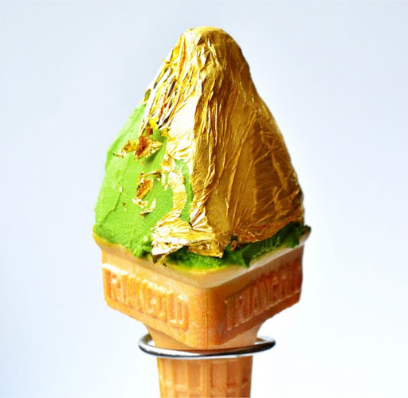

История
Мороженое — древнее лакомство. Высказываются предположения, что история мороженого насчитывает более четырёх тысяч лет.

За две тысячи лет до нашей эры в Древнем Китае к столу подавались десерты, отдалённо напоминающие мороженое, — снег и лёд, смешанные с кусочками апельсинов, лимонов и зёрнышками гранатов. Рецепты и способы хранения были рассекречены лишь в XI веке до нашей эры в книге «Ши цзин».
Охлаждённые (снегом и льдом, доставляемыми с гор и ледников) вина, соки, молочные продукты и их смеси потребляли древние греки, древние персы (где для сохранения льда и замороженных продуктов строили специальные сооружения яхчалы), древние римляне, моголы в Индии. Известен акутак — эскимосское мороженое из ягод, мяса и сала.
Назад
©Юбко Артемий 2021г